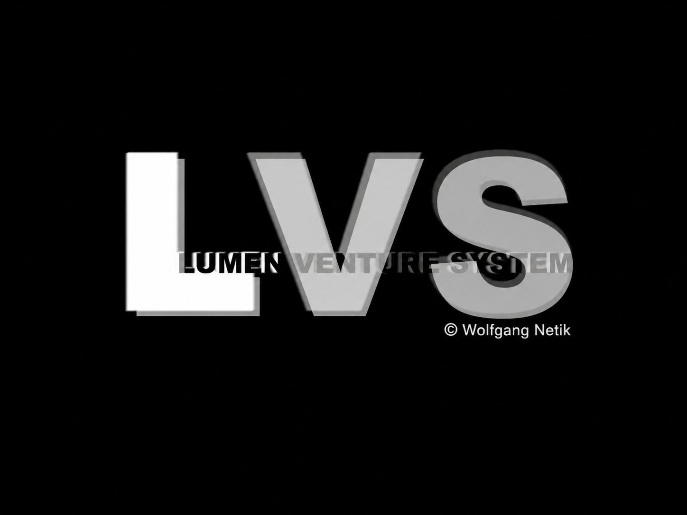

Identity
Stable LVS ID, version and SHA-256 content hash.
LVS normalizes a software educt once and prepares machine-readable, auditable distribution artifacts for agent ecosystems, APIs and cloud marketplaces.

One canonical software capability becomes multiple target packages instead of being rebuilt manually for every ecosystem.
Stable LVS ID, version and SHA-256 content hash.
Rights holder, copyright, license and third-party notices.
Components, dependencies and software supply-chain metadata.
Tests, provenance, compatibility and quality evidence.
OpenAPI, MCP, A2A and UCP-oriented target metadata.
Machine Shop, Human Shop and future cloud marketplace packaging.
The same canonical inventory can be exposed to humans and software agents.
These are static discovery artifacts for the first public prototype. Transactional procurement and private Evidence Graph services remain future runtime services.
Project-originated LVS materials are published with explicit rights and provenance metadata. Third-party copyright, licenses and attribution remain intact.
rights_holder: Wolfgang Netik
Early public specification and prototype. The commercial runtime and procurement intelligence remain staged.
Capability Passport: prototype. Educt Compiler: staged. Procurement Compiler: planned. VSF: research / local reference prototype. This status update is not a public runtime release.
V29 recorded 46 passing local tests; independent external reproduction is pending. A 12-task, three-provider synthetic experiment reached 36/36 final accepted results after retries, and 36/60 across all attempts. General accuracy and token savings are not established.
Verification scope and limitations · Experiment · VSF research · Machine-readable status
A research-stage cooperation concept for evidence-linked machine services and resource allocation. No public token, payment service, established market value or independently verified market is offered.
View repository